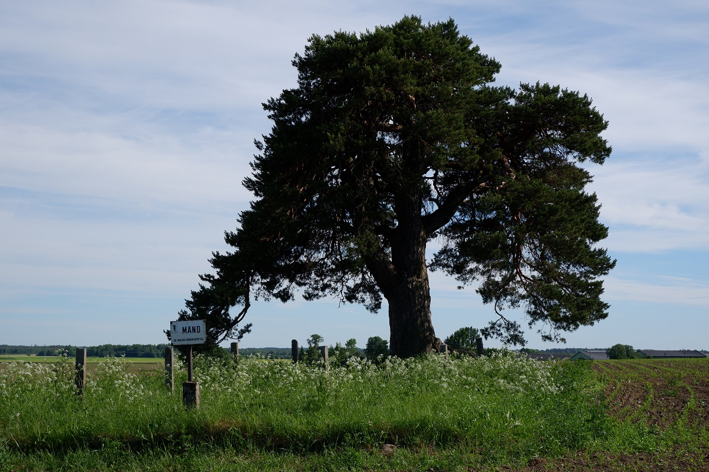
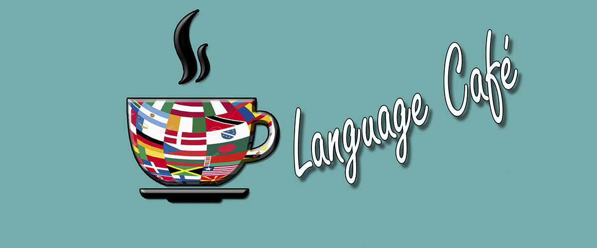
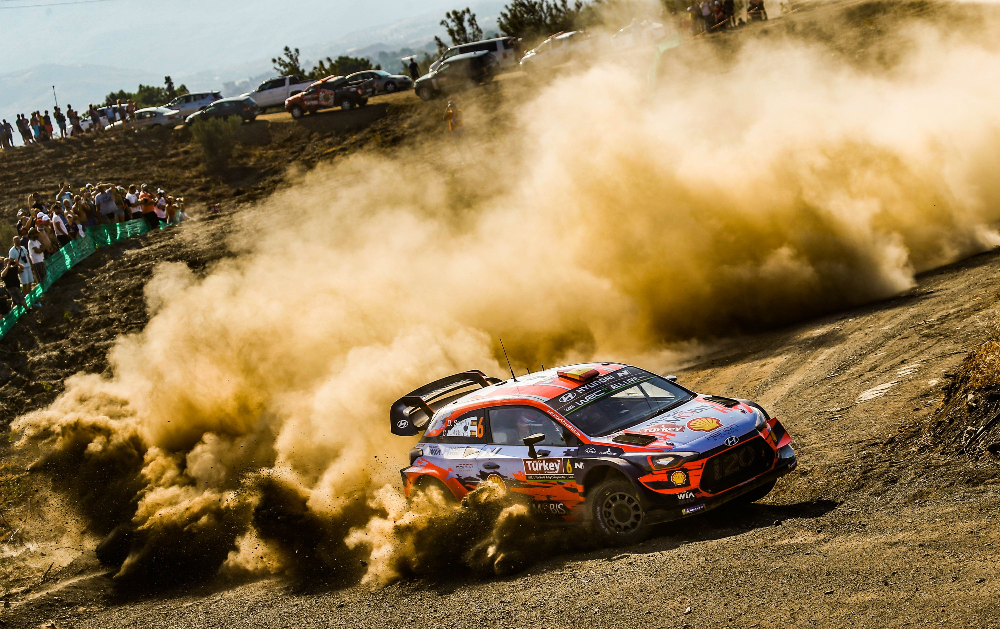

Photography in nature is a huge passion for me. In my free time I try to post pictures from my hiking trips on 500px, Unsplash, and Instagram.

I love exchanging language and culture with people from all across the world. From time to time I try to practice and improve my German, but these days I'm mostly focused on learning Estonian. Also I have fluent English and
Turkish.

I'm obssessed with video games since I'm three years old. I especially love racing/rally game genre, furthermore I also love watching rally competitions.
Steam Profile
PSN Profile
In general I keep up with tech trends on Twitter, Youtube, and Reddit. I also track market cap sizes and stock performance predictions of tech companies.